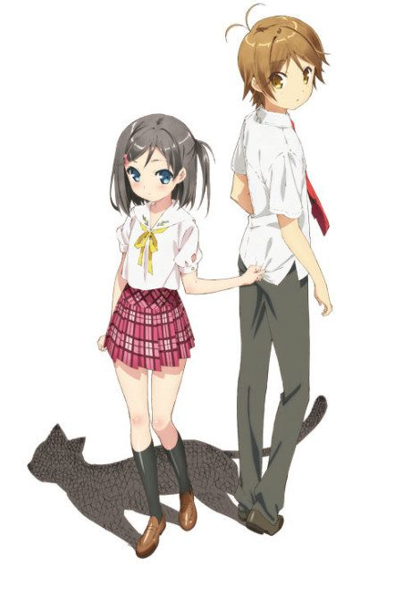

Hentai Prince & the Stony Cat
変態王子と笑わない猫。
Youto and Tsukiko make wishes at a cat statue. He loses his public mask, she loses her facial expressions.
After the anime, read the light novel from Volume 7.
6.8AniList score
—Animeter, no votes yet
12episodes
Rate it or report where you stopped
Is it worth pushing through?
Built from what visitors report across all 12 episodes.
Loading reports…Checking what other people said about this one.
Sign in above with your email to add your report.